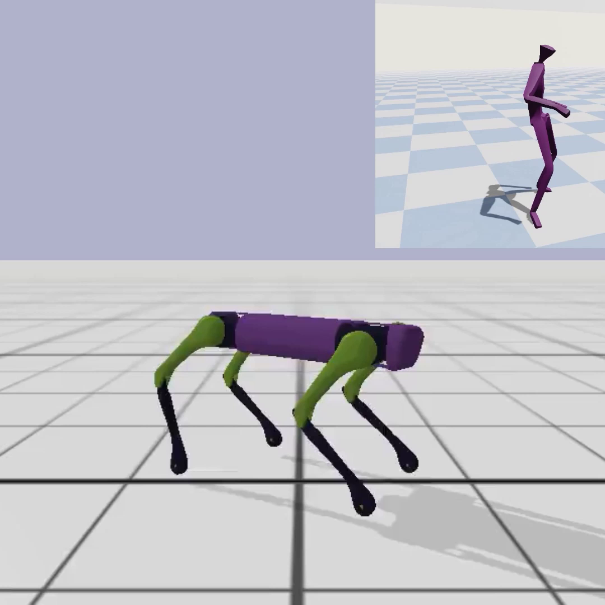
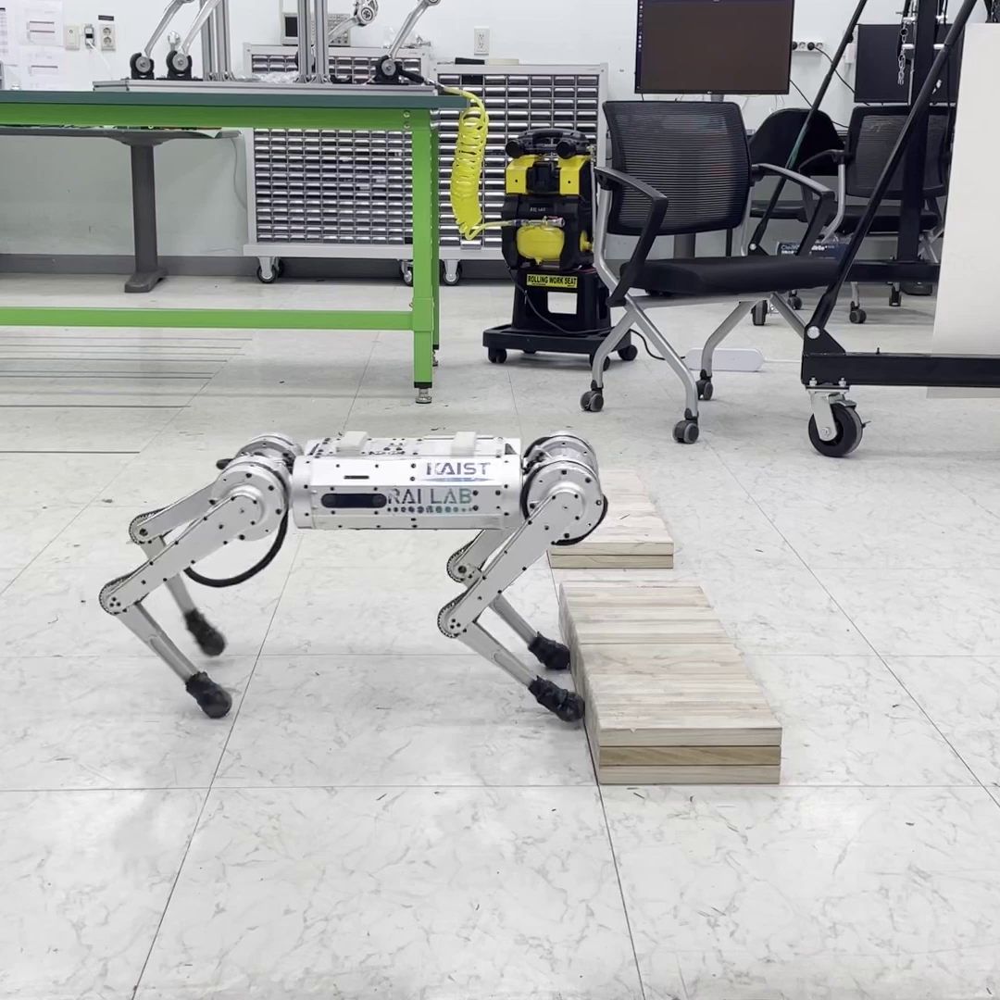

|
Hyunyoung Jung I am a second-year Master's student at Georgia Institute of Technology, majoring in Electrical and Computer Engineering.
I am currently being advised by Dr. Sehoon Ha and closely working with Dr. Hae-Won Park. Email / Google Scholar / Twitter / Github |
ResearchMy research goal is to develop learning-based control algorithms that enable robust and agile locomotion and interactive behaviors within human environments. For this, I am currently working on research in legged robot locomotion, employing an approach that integrates classical control and learning-based methods. I believe this approach can complement the drawbacks of each method by reducing the burden of reward engineering and improving the performance of the model-based method. Furthermore, I am exploring the possibilities of human motion-driven control by establishing correspondence between humans and robots. |
Publications and Preprints(*: equal contribution) |
|

|
CrossLoco: Human Motion Driven Control of Legged Robots via Guided Unsupervised Reinforcement Learning
Tianyu Li, Hyunyoung Jung, Matthew Gombolay, Yong Kwon Cho, Sehoon Ha ICLR, 2024 project page / video / arXiv We introduce a guided unsupervised reinforcement learning framework that simultaneously learns robot skills and their correspondence to human motions. |
|

|
Imitating and Finetuning Model Predictive Control for Robust and Symmetric Quadrupedal Locomotion
Donghoon Youm*, Hyunyoung Jung*, Hyeongjun Kim, Jemin Hwangbo, Hae-Won Park, Sehoon Ha RA-L, 2023 project page / video / arXiv We propose a learning framework that can bridge between model-based and learning-based approaches for legged robot control by imitating expert model predictive control (MPC) and fine-tuning the pre-trained policy with reinforcement learning. |
Ongoing Projects |

|
Humanoid locomotion with learning-based method leveraging model-based control
Training the locomotion of full-sized humanoids is a challenging task and less investigated in a learning-based control society compared to quadrupedal robot locomotion.
Unlike quadrupeds, the humanoids have more complicated structures making it hard to use a straightforward model-free reinforcement learning approach.
|
Education |
Georgia Institute of TechnologyM.S in Electrical and Computer Engineering |
Aug. 2022 - Present |
Seoul National UniversityB.S. in Mechanical EngineeringB.S. in Computer Science and Engineering |
Mar. 2016 - Aug. 2022 |
Work and Teaching Experiences |
CS 8803 Deep Reinforcment Learning for Intel. ControlTeaching AsistantGeorgia Institute of Technology |
Spring 2024 |
CS 3451 Computer GraphicsTeaching AsistantGeorgia Institute of Technology |
Spring 2023 |
Saige ResearchResearch Intern |
Apr. 2021 - Dec. 2021 |
Samsung ElectronicsStudent Intern |
Jan. 2021 - Feb. 2021 |